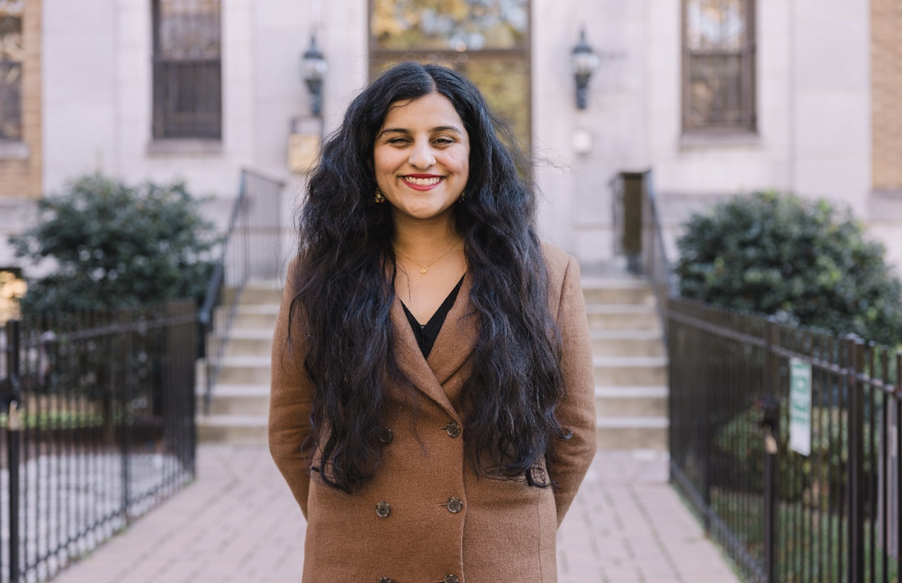

About Me

Neeraja Deshpande is a writer and editor based in Washington, D.C. She works full-time for Independent Women, a center-right women’s organization, as a policy analyst focusing primarily on education and gender. She is also a senior contributor to IWFeatures.com, Independent Women’s grassroots journalism initiative. Her work has appeared in outlets including City Journal, Pirate Wires, The Spectator, and The Free Press (where she previously worked as a staff researcher), among others.
Neeraja is originally from the Greater Boston area and graduated magna cum laude from all-women’s Wellesley College with a B.A. in Russian.
I’m often asked how an Indian-American woman who lives in D.C. and grew up outside of Boston and went to all-women’s Wellesley College winds up working on the right side of the aisle. Well. I was enough of a contrarian in high school to intern at the Massachusetts GOP in summer 2017, right before my junior year of high school, but squishy enough to have voted for Biden (yes, I know) in 2020. It was the excesses of COVID, and the fact that Biden promised a return to normal that never came, that made me swing to Trump in 2024.
The first year of the lockdowns—my freshman and sophomore years of college—I was honestly pretty on board with COVID restrictions. I was even fine with getting the COVID vaccine! It was only after we were forced to get vaccinated but weren’t allowed to return to normal—my college was more or less masking through 2023—that I actually soured on the entire thing and started DMing (from my anonymous Twitter account) anyone who would listen about how crazy things were on campuses in September 2021. One of those people happened to be Bethany Mandel, who—and I truly think this was divine intervention—basically told me, after I contacted her, that she was looking for a research assistant for the book she was writing with Karol Markowicz and would I be interested? That was a very easy yes.
I’d written publicly before—some milquetoast opinions, some reporting for the Richmond Fed’s magazine—but nothing controversial, so, when beginning my foray into touching the subjects I cover these days, I wrote under a semi-pseudonym for The American Mind, “Neera Deshpande,” starting in early 2022, and wrote an anonymous essay against my college’s COVID restrictions for the Brownstone Institute that I emailed (also anonymously) to nearly the entire faculty. By late 2022, I was working for The Free Press in its early days, and, after a year spent teaching grades 7-12 (I’d been a tutor and teaching assistant throughout college, and teaching always spoke to my heart), I wound up deciding to combine my interest in education with my public writing, and found this position at Independent Women, where I have been blessed to work since July of 2024.
This brings me to my current interests (as of 2026).
With the exception of the single year I spent teaching grades 7-12 (academic year 23-24), I’ve spent basically my entire adult life thus far in women’s-only spaces. It’s more or less why I’m constantly thinking, writing, and tweeting about women. I wouldn’t necessarily call myself a feminist, though, although I wouldn’t call myself an anti-feminist either. In my view, feminists pretend sex differences between men and women don’t exist, while anti-feminists seem to believe sex differences mean women are essentially children, who should not be allowed to participate in public life.
I think both “sides” get it wrong: women don’t need to be men, or be like men, in order to be dignified adults—that our sexed differences are neither good nor bad, and make us humans of the female variety.
Using this as my basic guiding principle, I’ve written about egg-freezing-as-insurance-policy, the sexual side-effects of SSRIs, Women’s History Month, and #MeToo—in addition to the scourge of pediatric gender medicine, which itself comes from a failure to understand biological reality. I’ve also contributed to reports on keeping males out of women’s prisons, and on family formation aka dating in the 2020s. I hope to keep writing about women and women’s issues in the future.
Beyond that, much of my work centers on teachers—having been one, however briefly, I know how difficult and undervalued a job it is, and believe that teachers, at least the good ones, are all too often victimized by the same bureaucracy, the same idiotic ideologies that have left students across the country illiterate and innumerate. Attracting and retaining talented teachers and preventing the death spiral from the profession is, as I see it, one of the greatest problems facing American education—the state of which is one of the greatest problems facing the country.
Other great problems facing the country: the collapse of the institutions post-COVID—how do we rebuild them? How do we avoid what I’ve taken to call “the Gorbachev trap”?—and, perhaps related, the scarcity mindset that says the pie can’t get bigger. I’m a big believer in the basic idea of Abundance. I think tech is awesome and while we should take steps to protect our humanity and attention spans and ability to do things and all that, I think AI is awesome, too (in fact, I made this website with Claude Code!). I like Waymos and data centers and I worry that we are living in a country where people see their flourishing as being threatened rather than enhanced by all of those things.
It also worries me that Silicon Valley types have sort of brought this upon themselves (and by extension, all of us) by frothing at the mouth about how everyone but them is going to be in the so-called “permanent underclass” in the AI age. It’s not true, but ordinary people—the types who have mortgages and spouses and kids—are horrified at what they are hearing and vote in what they perceive to be their interests. I want to see better messaging across the board from the tech community (which, P.S., please contact me if you’re interested in chatting).
Anyway, that’s plenty of words, so I’ll leave it there—that was the long version (I did say “only if you want,” in my defense!).